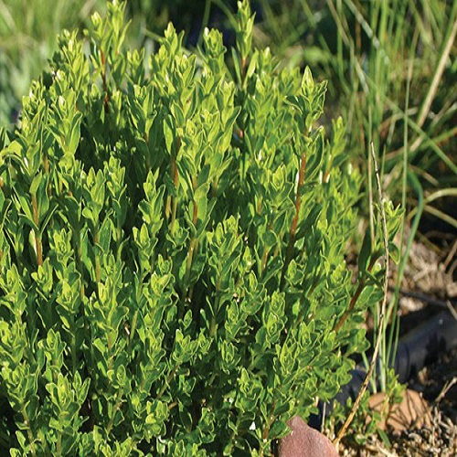

Les plantes
6 plantes à connaitre
-
Qu'est-ce que le desmodium?
L’origine du nom du Desmodium adscendens provient du grec desmos, qui signifie « lien » ou « faisceau », en allusion aux étamines qui se réunissent en tube à leurs extrémités, et d’adscendens, qui représente les propriétés des parties aériennes à ascensionner les troncs des palmiers à huile.
Cette plante médicinale est bien connue dans toutes les régions tropicales et subtropicales d’Amérique, d’Afrique et d’Inde, où elle est utilisée de manière intensive en médecine traditionnelle.Quelles sont les vertus du desmodium sur la santé ?
Il contient : Des polyphénols : des flavonoïdes dont vitexine et isovitexine, des anthocyanines dont pélargonidine, et des tannins qui ont puissantes propriétés antioxydantes et antiradicalaires. Du d-pinitol (or 3-O-methyl-d-chiro-inositol) aux propriétés hépato-protectrices et anti-hépatoxiques
Il est hépatoprotecteur. Dans un avis publié en 2006 suite à un signalement de pharmacovigilance, l'Agence française de sécurité sanitaire des aliments indique que le desmodium est traditionnellement présenté comme un "protecteur hépatique". "Cette plante augmente la résistance du foie notamment en cas d'inflammation d'origine toxique ou infectieuse comme un traitement médicamenteux ou une chimiothérapie.
Il stimule le système immunitaire. Il contribue au bon fonctionnement des défenses de l'organisme et aide ainsi à nous prémunir des infections, notamment ORL. -
Qu'est-ce que l'aloe vera ?
L'utilisation de l'aloe vera en phytothérapie remonte à plus de 5000 ans. Empiriquement, toutes les civilisations, sans exception, l’ont utilisé comme remède thérapeutique. L'aloe vera apparaît ainsi dans les écrits chinois et sumériens 3000 ans av. J.-C.
Les égyptiens au temps des pharaons, adoraient l’aloe vera qu'ils appelaient «plante de l'immortalité". L’aloe apparaît dans les gravures et papyrus qui mentionnent son effet anti-inflammatoire et analgésique. Les pharaons l’ont aussi appelé l'élixir de la vie éternelle. Il est dit que Cléopâtre l’utilisait pour ses soins quotidiens.
La civilisation arabe a utilisé l’aloe vera depuis l’antiquité et l’appelait «lys du désert». Elle a été la première à faire du commerce avec les aloès dans le Moyen-Orient et en Asie. Sa valeur médicinale était aussi connue dans différentes partie de l’Inde (Inde, Chine, Malaisie,…).
Au cours de la civilisation gréco-romaine, les médecins illustres et sages de l'antiquité comme Aristote, Hippocrate et Dioscoride, entre autres, mentionnait dès lors de nombreux avantages pour guérir les blessures, les furoncles, les troubles de la vue, éviter la perte de cheveux, les soins de la peau, soulager les ulcères génitaux... Il est dit que Aristote convaincu Alexandre Le Grand à envahir l'île de Socotra, pour ses plantations d'aloès, ce qui lui permettrait de guérir ses guerriers lors des batailles.Quelles sont les vertus de l'aloe vera sur la santé ?
L'aloe vera est une plante aux nombreuses qualités pour prendre soin de votre santé, que ce soit en usage interne ou externe. Pour profiter des bienfaits de l'aloe vera sur la santé, on utilise le latex jaune tiré de la couche externe des feuilles et le gel d'aloe vera, clair et mucilagineux, extrait de l'intérieur des feuilles d'aloe vera.
Non seulement, elle stimule les défenses immunitaires, cicatrise, mais elle agit également comme un antibiotique et un anti-inflammatoire. L’aloe vera favorise l’élimination des toxines et soulage les crampes d’estomac et les maux gastriques. De plus, cette plante remarquable est recommandée aux diabétiques, et aux personnes souffrant d’allergies, de constipation, de problèmes cardiaques… -
Qu'est-ce que le ginseng ?
Sa racine est célèbre chez les chinois pour ses vertus tonifiantes et aphrodisiaques. Son usage traditionnel, initialement réservé à l’Empereur et aux grands seigneurs féodaux, remonte à l’antiquité. En Occident, elle connaît un vif succès depuis le XVIIème siècle. Son nom « Panax », panacée, indique qu’elle est réputée comme pouvant tout soigner.
Le Ginseng sauvage est devenu très rare dans ces régions d’origine (Corée, Nord-Est de la Chine, Est de la Sibérie). Il provient de plants cultivés en Corée, Chine ou Japon. C’est une plante vivace herbacée dont la racine anthropomorphe a excité l’imagination. Les feuilles dites palmatilobées, les fleurs sont groupées en ombelle et le fruit est une baie rouge.Quelles sont les vertus du ginseng sur la santé ?
il booste les capacités physiques, puisqu’il tonifie l’organisme des personnes fatiguées ou affaiblies, augmente la capacité de travail physique et aide les personnes en convalescence à reprendre des forces. il améliore les capacités intellectuelles, car le ginseng a un impact sur les performances cognitives comme la concentration, l’attention ou encore la mémorisation.
il permet de s’adapter au stress, puisqu'il diminue la sécrétion de cortisol et stimule ainsi l’organisme. il régule les dysfonctionnements du système immunitaire : le ginseng augmenterait l’activité de nos cellules immunitaires et contribuerait ainsi à soutenir le système de défense de l'organisme. il a une action anti-oxydante, puisque le ginseng combat les radicaux libres responsables du vieillissement grâce à sa richesse en polysaccharides.
il régule le métabolisme glucidique, car il augmente la tolérance au glucose et participe au contrôle du taux de sucre dans le sang après un repas. -
Qu'est-ce que l arbre à thé ?
L’arbre à thé (Melaleuca alternifolia) est plus couramment nommé sous son nom anglais : tea tree. Il ne doit pas être confondu avec le théier (Camellia sinensis) dont les feuilles et les bourgeons sont utilisés pour l’élaboration du thé. Le théier appartient à la famille des théacées tandis que l’arbre à thé fait partie des myrtacées. Le théier est originaire d’Asie alors que l’arbre à thé vient d’Australie.
Le surnom d’arbre à thé de l’arbuste Melaleuca alternifolia remonterait au XVIIème siècle. Il lui aurait été attribué par le capitaine James Cook lors de son voyage au tour du monde. Lorsqu’il aborda les côtes australiennes, il aurait demandé de préparer un thé désaltérant à partir des feuilles de Melaleuca alternifolia. Le naturaliste de l’expédition aurait ensuite conservé quelques échantillons avec la mention « tea tree », un surnom que continue de porter le mélaleuque à feuilles alternes (Melaleuca alternifolia).Quelles sont les vertus de l'arbre à the sur la santé ?
Ce sont les vertus antiseptiques et antibactériennes de l'huile essentielle qui retiennent l'intérêt de la médecine occidentale depuis les années 1920. Le terpitène qu'elle contient agit contre le staphylocoque doré et le colibacille responsable d'infections urinaires. L'huile essentielle de Tea tree se montre également efficace contre les infections bronchiques, les piqûres d'insectes et les petites blessures cutanées (acné, verrues, psoriasis, boutons…).
On la préconise aussi pour ses vertus antifongiques à large spectre, dans le traitement des mycoses de la peau, vaginale, de l'intestin. En bain de bouche ou gargarisme, elle renforce l'hygiène buccale, soigne les infections des gencives et calme les maux de gorge. -
Qu'est-ce que la melisse ?
Melissa officinalis (mélisse) est une plante herbacée vivace parfumée au citron. Les archives concernant son utilisation remontent à plus de 2000 ans avec des entrées dans l'Historia Plantarum (environ 300 avant JC ) et la Materia Medica (environ 50–80 avant JC ). Les usages médicinaux tout au long de cette époque précoce incluent une recommandation de Paracelse (1493-1541) selon laquelle la mélisse revivifierait complètement un homme et devrait être utilisée pour "tout désordre du système nerveux". .
Elle est utilisée dans la région méditerranéenne et en Europe depuis le Moyen Âge à plusieurs fins telles que la régulation du sommeil, de l'appétit et de la digestion. La mélisse est une plante très respectée. Aussi appelée mélisse citronnelle ou citronnelle, la Melissa officinalis ne doit pas être confondue avec la véritable citronnelle.
Melissa est une dérivation latine du mot grec pour abeille car ces dernières récoltent le nectar pour en faire du miel et officinalis est l'indication de son caractère médicinal.Quelles sont les vertus de la melisse sur la santé ?
La mélisse est principalement digestive et relaxante. Elle est recommandée en cas de troubles digestifs : la mélisse traite la plupart des troubles digestifs : digestion lente, ballonnements, éructations, flatulences, et soulage les douleurs hépatiques Troubles mineurs du sommeil chez les adultes et les enfants.
La plante est utilisée en cas de nervosité, d'insomnie, de dépression nerveuse légère, de migraines et de palpitations. -

Qu'est-ce que le buchu ?
Le buchu est une plante aromatique qui dégage une odeur très agréable proche de celles de la menthe poivrée et du romarin. Ses feuilles ovales, qui mesurent moins de 2 cm de long, sont légèrement dentées. Elles présentent de nombreuses fentes à l’intérieur desquelles se trouve l’huile essentielle. Ses petites fleurs blanches ou roses apparaissent à l’automne, lorsque les feuilles tombent.
Ses fruits sont de petites capsules qui contiennent 5 graines noires.Quelles sont les vertus du buchu ?
Ce sont les vertus diurétiques et antiseptiques du buchu qui sont recherchées pour lutter contre les petites infections urinaires de type cystite pour les femmes et prostatite pour les hommes. La plante favorisera l'élimination urinaire et soulagera les dysfonctionnements urinaires bénins.
Autrefois, on attribuait au buchu des vertus stimulantes et carminatives. Il fut aussi utilisé contre les troubles digestifs et les douleurs articulaires, pour apaiser les problèmes respiratoires et pour favoriser la sudation. En quelques sortes, en Afrique du Sud, le buchu s'apparenta longtemps à une sorte d'élixir miracle capable de tout et indispensable pour être en forme.